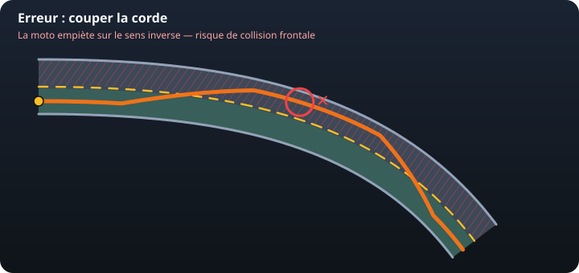
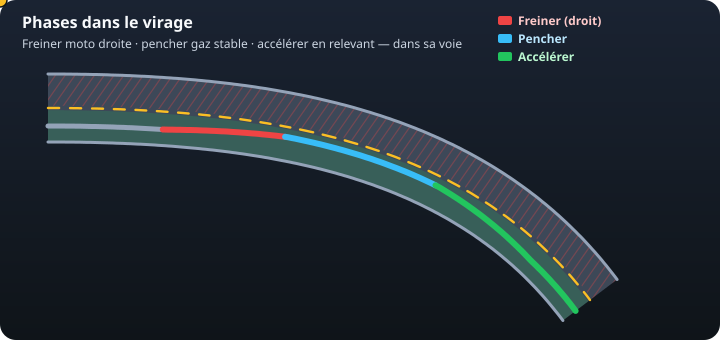

Sur route ouverte, la moto n’a pas le droit de « se mettre sur toute la chaussée ». La trajectoire de sécurité se dessine dans votre voie, jamais dans celle d’en face.
La règle qui corrige le schéma
Le schéma d’origine montrait une courbe orange qui traversait la ligne jaune. C’est une trajectoire de circuit, pas une trajectoire de sécurité. En France on circule à droite : le bandeau vert est votre voie, le hachurage rouge est le sens inverse.
Ralentir avant le virage, moto encore droite.
Se placer à l’extérieur de sa voie — près de la ligne, mais de votre côté — pour ouvrir le champ de vision.
Regarder la sortie : le regard tire la moto.
Se replacer dans sa voie, sans couper la corde.
« Extérieur » = l’extérieur de votre file, pas l’extérieur de toute la route. Chevaucher ou franchir la ligne médiane expose à un choc frontal et est une faute d’examen.
L’erreur : couper la corde

Couper, c’est tendre la courbe en empruntant le milieu de la chaussée. Sur circuit il n’y a personne en face. Sur route :
un véhicule arrive dans l’angle que vous venez d’occuper ;
vous ne voyez la sortie qu’au dernier moment ;
si vous devez élargir, il n’y a plus de marge — bas-côté, glissière ou choc.
Trois couleurs, trois actions
Le point jaune parcourt le virage. Chaque couleur est une phase : on ne les mélange pas.

Rouge — freiner
Quand : avant l’entrée, moto droite, regard déjà vers la corde puis la sortie.
Pourquoi : le pneu avant porte le freinage. Droit, presque tout le grip sert à ralentir. On arrive au virage à une allure que l’angle pourra tenir.
Sans ça : on freine penché. Le pneu doit à la fois tourner et stopper — il décroche (lowside). Un rattrapage brutal peut haut-côté. Ou on arrive trop vite et on sort, ou on coupe vers le sens inverse.
Bleu — pencher
Quand : vitesse déjà posée. On incline, regard loin, gaz stable : ni coup de frein, ni coup de gaz.
Pourquoi : l’adhérence est alors réservée au virage. Un filet de gaz maintient l’assiette. Le regard fixe la sortie, pas le bas-côté.
Sans ça : freiner sur l’angle, ou accélérer trop tôt, fait élargir ou glisser. Pencher trop tard / trop vite pousse à couper. Regarder le danger y mène.
Vert — accélérer
Quand : la sortie est vue, la moto se relève. On rouvre progressivement les gaz.
Pourquoi : l’accélération redresse et stabilise. On récupère du grip longitudinal une fois l’angle diminué, et on se replace dans sa voie.
Sans ça : gaz trop tôt (encore très penché) = patinage arrière, élargissement, sortie ou choc. Pas de gaz du tout = la moto « tombe » vers l’intérieur, on reste trop longtemps à l’angle.
Pourquoi cet ordre, et pas un autre
Un pneu moto n’a qu’un budget d’adhérence. Freiner, tourner et accélérer en même temps le dépense trois fois. D’où la séquence enseignée en plateau comme en circulation :
on enlève de la vitesse tant que la moto peut encore freiner fort (droite) ;
on utilise l’angle pour changer de direction, à allure constante ;
on réaccélère quand l’angle diminue, pour ressortir proprement.
Inverser (accélérer puis freiner penché, ou couper pour « gagner » de la corde) est le scénario classique de sortie de route et de collision frontale en virage à gauche mal préparé.
Virage à droite, virage à gauche
Droite : extérieur de votre voie = vers la ligne médiane, sans la franchir. On voit plus tôt ce qui arrive en face.
Gauche : extérieur de votre voie = vers le bas-côté / accotement. Couper ici, c’est foncer vers le sens inverse pile au moment où un véhicule peut déboucher.
Dans les deux cas on ne « prend pas toute la route ». La ligne continue se respecte ; même une ligne discontinue n’autorise pas à occuper le sens inverse pour négocier un virage.
Ce que l’examen attend
À l’ETM, la bonne réponse est toujours : ralentir avant, extérieur de sa voie, regard sortie, replacer. « Couper la corde », « rester au milieu de la chaussée » ou « freiner fort en pleine inclinaison » sont des distracteurs.